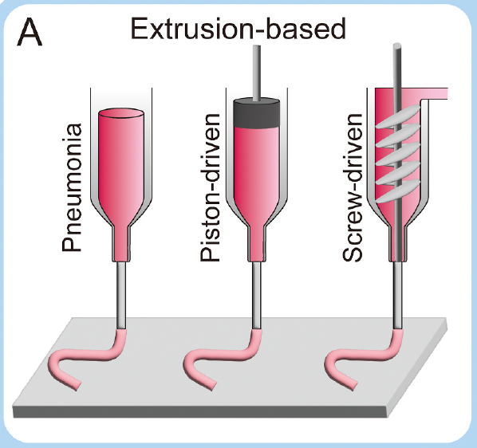
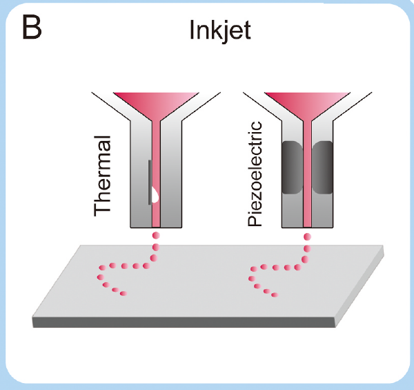
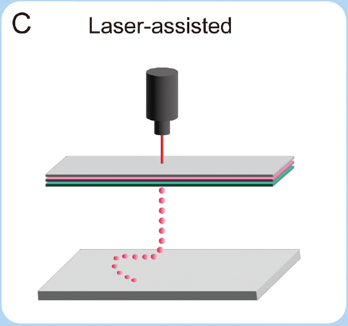
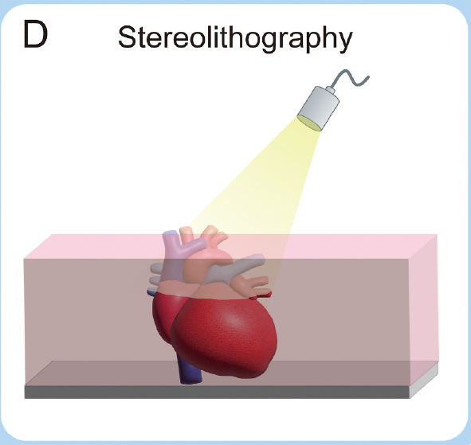

 La impresión biológica basada en extrusión ha ganado una amplia popularidad como técnica de impresión 3D versátil y directa, capaz de crear estructuras estables. Esta estrategia implica la eyaculación controlada de bio-tintas desde boquillas, que posteriormente se curan y se apilan capa por capa en el plano de impresión para construir una estructura 3D predefinida. Es importante destacar que la impresión biológica basada en extrusión ofrece una selección más amplia de bio-tintas en comparación con otras técnicas, facilitando el logro de una impresión de alta densidad celular. Sin embargo, la presión y el estrés de corte durante el proceso de extrusión podrían dañar las células. Además, las fluctuaciones de temperatura o la estimulación UV a menudo utilizadas para la solidificación de la bio-tinta pueden imponer un estrés adicional en las células. Por lo tanto, al cooperar con bio-tintas, las células utilizadas en este enfoque deben tener un tamaño, forma y viscosidad adecuados para ser eyectadas como gotas sin comprometer su viabilidad o funcionalidad. También deben ser capaces de resistir el proceso de polimerización de los materiales de la bio-tinta.
 La impresión biológica por chorro de tinta ofrece una ventaja notable en la entrega precisa de tintas biológicas a ubicaciones específicas según un esquema determinado, lo que permite la creación de estructuras biónicas multifuncionales evitando la interrupción de los constructos existentes. Esta técnica permite controlar el tamaño de las gotas de tinta hasta picolitros, lo que hace posible fabricar tejidos y órganos artificiales a escala microscópica. Si bien la impresión biológica por chorro de tinta es capaz de lograr microestructuras con pequeñas gotas de líquido eyectadas, también puede utilizarse para imprimir tejidos de gran tamaño. Sin embargo, la impresión exitosa de tejidos grandes requiere un número sustancial de células semilla y bio-tinta. Además, para la impresión biológica por chorro de tinta, las células deben cumplir con criterios estrictos, incluida la compatibilidad con los materiales de la bio-tinta y la capacidad de resistir el proceso de eyectado.
La bioimpresión asistida por láser es capaz de generar tejidos bioimpresos en 3D de alta resolución, lo que permite el patrón preciso de células individuales y estructuras más pequeñas. Una característica distintiva de LAB es la eliminación de boquillas para la deposición de bio-tinta, lo que reduce el riesgo de contaminación y disminuye los costos de fabricación. Además, la alta frecuencia de impresión de LAB lo hace adecuado para construir estructuras de alta resolución, como sistemas capilares, y su capacidad in situ minimiza el potencial de daño secundario a los receptores de trasplantes. Sin embargo, es crucial que las células utilizadas en LAB posean la capacidad de resistir la energía láser aplicada durante el proceso de impresión. También es importante tener en cuenta que el proceso de transferencia inducida por láser puede potencialmente alterar la estructura celular. La influencia del láser y la radiación ultravioleta en el ADN de las células también debe considerarse al aplicar la técnica de bioimpresión asistida por láser.
 La bioimpresión por estereolitografía utiliza matrices digitales de micromirrors para controlar la intensidad de la luz en cada píxel, lo que permite la polimerización de materiales poliméricos sensibles a la luz. Esta técnica ofrece varias ventajas, como una alta eficiencia de impresión, una resolución excepcional y un marco de modelo estable, lo que la hace adecuada para fabricar tejidos y órganos grandes. Para esta estrategia, las células deben ser compatibles con los materiales poliméricos sensibles a la luz, capaces de soportar las condiciones de polimerización inducidas por la exposición a la luz, y de mantener su viabilidad, funcionalidad e integridad estructural durante las etapas de impresión y post-impresión.